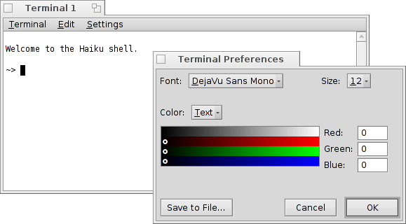
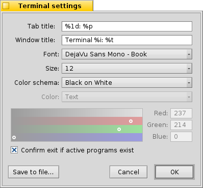

Español
Español Français
Français Deutsch
Deutsch Italiano
Italiano Русский
Русский Svenska
Svenska 日本語
日本語 Українська
Українська 中文 ［中文］
中文 ［中文］ Português
Português Suomi
Suomi Slovenčina
Slovenčina Magyar
Magyar Português (Brazil)
Português (Brazil) English
English Terminal
Terminal
| Deskbar: | ||
| Ubicación: | /boot/system/apps/Terminal | |
| Configuración: | ~/config/settings/Terminal ~/.profile - adds/overrides defaults in /boot/common/etc/profile ~/.inputrc - adds/overrides defaults in /boot/common/etc/inputrc |
La Terminal es la interfaz de Haiku a Bash, un intérprete de comandos (Bourne Again Shell en inglés).
Please refer to the topic on Scripting for a few links to online tutorials on working in the shell and also have a look at Haiku's commandline applications. Here, we'll concentrate on the Terminal application itself.
 Windows and tabs
Windows and tabs
Puede abrir tantas Terminales como se necesite, cada una de ellas en su propia ventana simplemente abriendo más Terminales o con ALT N desde una Terminal que ya esté corriendo. O puede usar la vista por pestañas de Terminal y abrir otra pestaña con ALT T.
Double-clicking into the emtpy part of the tab bar opens a new tab; onto a tab opens a dialog to rename its title. There are several %-designated variables that are explained with a tooltip when you hover the mouse over the text field.
By default, %1d: %p, a tab shows the current directory and, separated by a :, the name of the currently running process (or -- if it's just bash running, probably idling). The screenshot above shows the first tab with a FTP session in the Desktop folder and a second tab idling at home.
Via the Terminal window's title can be edited in a similar way.
Right-clicking a tab shows a context menu to , or, like double-clicking, .
Una ventana de Terminal se puede retamañar como cualquier o puede usar los ajustes preestablecidos desde el menú (Selecciones | Ventana). ALT ENTER habilita o deshabilita el modo a pantalla completa.
El tamaño de ventana modificada y la codificación del texto sólo se mantienen seleccionando (Selecciones | Guardar como predeterminado).
Settings
opens a panel to configure the standard settings of a Terminal.
It starts off with the "formulas" for naming tab and window titles. Again, tooltips show the available variables. Below that you set font type, font size and the different text and background colors. You can choose a pre-defined color schema like or or create a one using the color picker below.
Activate the checkbox to and you'll be warned when trying to close a Terminal window while an app is still being executed.
You can save different settings as separate profiles, which on double-click open an accordingly configured Terminal.
Pressing will save the current settings as default.
Atajos de teclado
Encontrará una lista de atajos útiles en Atajos y combinaciones de teclas.
Personalización de Bash
Coming from Unix, there are countless possibilities to customize the bash itself. There are two files that are especially important to the user: .profile and .inputrc
Both files can be created in the home/ folder and add or override the system defaults that are defined in /boot/common/etc/.
.profile
El archivo .profile se caraga cada vez que se abre una Terminal nueva. Selecciona toda clase de "aliases" y variables que afectarán el comportamiento y apariencia de Bash. Encontrará muchos recursos en línea que detallen todas las posibilidades.
El "Haiku/BeOS Tip Server" (Servidor de consejos de Haiku/BeOS, en inglés) tiene bastantes consejos para iniciar, por ejemplo:
- Personalizar el prompt de la Terminal
- Más personalizaciones del prompt
- Incrementar a Bash
- Atajos de teclado personalizados
Y hay más, déle un vistazo.
.inputrc
El archivo .inputrc trata con teclas de acceso rápido. Ya que Haiku proporciona predeterminados útiles, probablemente no tenga que lidiar con estas selecciones más envueltas. Si tiene necesidades especiales aquí, consulte alguno de los vastos recursos en línea, p. ej., The GNU Readline Library (La biblioteca de lectura en línea de GNU, en inglés).
Pistas para trabajar con la Terminal
Al arrastrar un archivo o carpeta desde una ventana de Tracker a la Terminal insertará su ruta en la posición del cursor. Arrastrar con el botón derecho del ratón ofrece acciones adicionales en un menú contextual:
(insertar ruta) Inserta la ubicación del archivo, igual que arrastrar y soltar con el botón izquierdo del ratón. (cambiar carpeta) Cambia a la carpeta del archivo arrastrado. (crear enlace aquí) Crea un enlace al archivo arrastrado en la carpeta de trabajo actual de la Terminal. (mover aquí) Mueve el archivo arrastrado dentro de la carpeta de trabajo actual de la Terminal. (copiar aquí) Copia el archivo arrastrado dentro de la carpeta de trabajo actual de la Terminal. Puede abrir cualquier archivo con su aplicación preferida con el comando open [nombredearchivo]. Esto también funciona con la representación de la carpeta actual (".") y su carpeta padre ("..") que lo abren en una ventana de Tracker. Así que, para abrir la carpeta de trabajo actual, se escribe:
open .